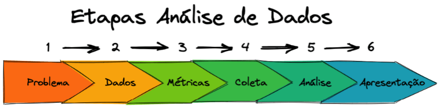

Análise de Dados: Um Guia Completo
A ciência de dados é uma área multidisciplinar que combina técnicas de estatística, computação e conhecimento de negócios para extrair insights valiosos de dados.
Aplicar ciência de dados pode transformar a maneira como as empresas tomam decisões, fornecendo uma base sólida e quantitativa.
Um processo típico de análise de dados envolve várias etapas que precisam ser realizadas com rigor para garantir que os resultados finais sejam precisos e úteis.
Passos da Análise de Dados
Cada uma das etapas a seguir desempenha um papel fundamental na estruturação e interpretação dos dados:
- Coleta de dados: A primeira etapa do processo, onde se reúne a maior quantidade de informações possível. Os dados podem ser coletados de diversas fontes, como bancos de dados, APIs, formulários e entrevistas.
- Limpeza de dados: Antes de qualquer análise, é crucial garantir que os dados estejam limpos e organizados. Isso envolve remover duplicatas, lidar com valores ausentes e corrigir erros.
- Análise exploratória: Aqui, os dados são explorados de maneira superficial para entender padrões, tendências e anomalias. Ferramentas como gráficos e estatísticas descritivas são amplamente usadas nesta fase.
- Modelagem: Com os dados preparados, modelos preditivos ou descritivos são aplicados para responder a perguntas específicas ou fazer previsões.
- Apresentação de resultados: Por fim, os insights obtidos precisam ser comunicados de maneira clara e objetiva. Relatórios, dashboards e apresentações são usados para compartilhar os achados com os stakeholders.
Ferramentas Essenciais de Ciência de Dados
Para realizar essas etapas, os cientistas de dados utilizam uma variedade de ferramentas que facilitam tanto o processamento de dados quanto a criação de modelos. Aqui estão algumas das mais utilizadas:
- Python: Uma linguagem de programação versátil, usada para a análise de dados, machine learning e automação de tarefas repetitivas.
- R: Famosa por suas bibliotecas estatísticas, é amplamente utilizada em análises complexas e modelagem.
- SQL: Uma linguagem de consulta de banco de dados utilizada para extrair, manipular e organizar grandes volumes de dados.
- Excel: Embora simples, o Excel é útil para a análise rápida de pequenos conjuntos de dados e para criar relatórios automatizados.

Figura 1: Um exemplo de gráfico gerado durante a análise exploratória.
Para explorar mais a fundo as etapas de coleta de dados e entender suas implicações no projeto, clique aqui para acessar a página 2.